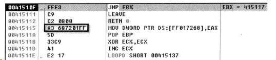
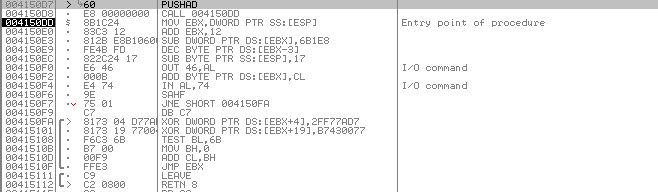
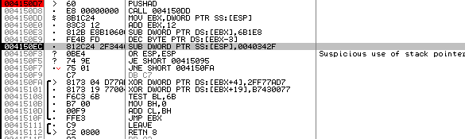
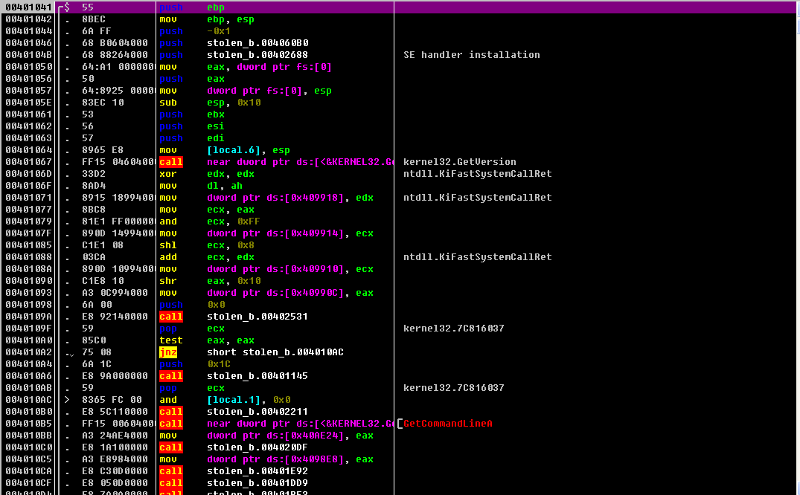
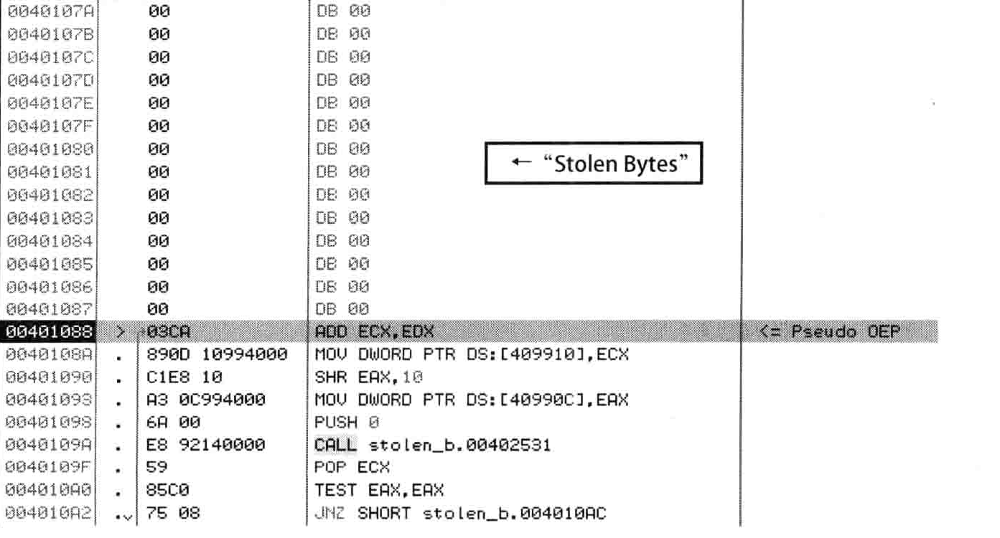
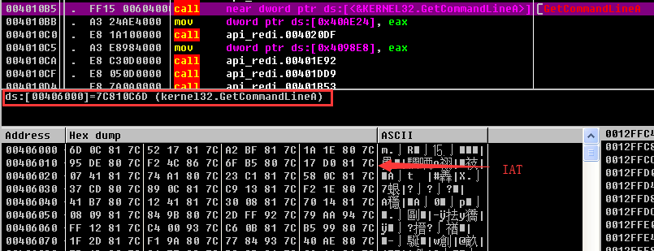
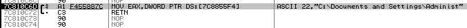
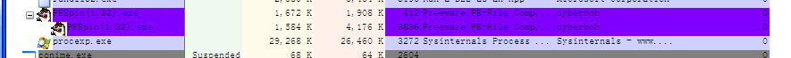

高级反调试技术
应用了这些高级反调试技术的程序包含大量垃圾代码、条件分支语句、循环语句、加密/解密代码以及“深不见底”的调用树( Call-Tree),代码逆向分析人员一旦陷人其中便会迷失方向,根本无法访问到实际要分析的代码，只是在无关紧要的地方徘徊
当然，这并不是说调试全无可能，只是说调试的难度大大增加了。分析PE保护器也是一个非常棘手的问题,需要花费大量的时间与精力。而且，“完美分析”本身就是极其艰巨的任务。
垃圾代码
向程序添加大量无意义的代码来增加调试的难度，这就是“垃圾代码”反调试技术。尤其是当这些垃圾代码中包含有真正有用的代码或者应用其它反调试技术的时候，调试程序会变得更加困难。
例如执行具有相同操作数的指令 最终执行的是一些毫无意义的运算 还有就是利用运算指令SUB和ADD设置值等
扰乱代码对齐
扰乱代码对齐是指：“向代码插入（进故宫精巧设计的）不必要的代码来降低反汇编代码的可读性”的技术称为扰乱代码对齐技术

0x41510F地址处的JMP指令用来跳转到515117地址处，但是415117地址处的反汇编代码没有正常的显示。这是由于扰乱代码对齐（Breaking Code Alignment)使OllyDbg调试器。415115地址处的指令中，操作码为”A3”,对应于MOV指令，用来处理四个字节大小的立即数值。所以对应地址处的指令长度最终被解析为5个字节，515115地址处的“A368”指令是故意添加的代码，用来扰乱代码对齐，程序中未使用它，实际的代码是415117处的”7201”。
借助单步跟踪进入StepInto(F7）命令进入415117处，可以显示正常代码。如果完全掌握代码就贸然使用StepOver(F8)等命令跟踪调试，很有可能就会遇到其他反调试技术拦截。od有类似的分析（analysis）功能（快捷键Ctrl+A），用来提高代码的可读性，有时候使用这个功能会使代码解析失败，这个时候就不要使用这个功能，右键analysis-remove analysis from module.这样od就不会对代码进行智能解析，而是直接显示处原先的反汇编代码。
使用扰乱代码对齐技术，在去往真正的实际的代码之前od与ida都会处于非对齐状态。
加密/解密
加密/解密是压缩器与保护器中经常使用的技术，用来隐藏程序代码和数据，从而有效防止分析程序。
代码重组技术
有些程序为了降低代码可读性，增加代码的跟踪难度，采用了实时组合执行代码的技术手法
如下图1所示，0x4150e3地址处的SUB指令与4150e9地址处的DEC指令用来修改其下的代码（分别为4150EF,4150EC),执行这2条指令后，其代码的变形如图2所示：


可以看到 重新生成了4150ec地址处的指令，CPU会执行新的指令代码。
该技术的优点是 用户在解码的代码出设置断点（cc断点）后 程序运行就会引发运行错误 这是因为 设置有断点的区域被0XCC取代 从而出现完全不同的计算结果
Stolen Byte(Remove OEP)
stolen bytes技术将部分源代码（主要是OEP代码）转移到压缩器/保护区创建的内存区域运行。
该技术的优点是，转储进程内存的时候，一部分OEP代码会被删除，转储的文件无法正常运行，反转储技术。另一个优点是，应用stolen butes技术的文件再次经过压缩器/保护器要锁后，会给逆向分析人员带来很大的混乱。文件脱壳以后，得到的不是熟悉的ＯＥＰ代码，而是其他形态的代码，这样很难判断是脱壳成功还是需要继续操作，容易引起代码逆向分析人员的混乱。（这里有一个PEPSpin保护器可以执行相应的操作）
练习示例（stolen_bytes.exe）
在OD中打开程序

在PESpin保护器中开启“Remove OEP”选项 打开示例程序 执行“Protect”操作（stolen_bytes_pespin.exe）在OD中打开stolen_bytes_pespin.exe程序 跳到OEP地址处
从图可以看到，401088地址之前的代码都被替换为NULL值(请与前图中的EP代码比较)。虽然图53-12并未显示全部代码，但可以看到OEP ( 401041 ) ~401087区域中的代码已被删除。删除的代码被保存到PESpin添加的节区，脱壳后调用执行。以下代码就是保存在PESpin节区中的“消失的OEP代码”。

API重定向技术
在主要的Win32 API (文件，注册表，进程，网络等）处设置断点，能够在调试程序的时候快速掌握代码流，要调试的代码非常多的时候，这个方法能够轻松进入核心代码调试。
API重定向就是破解上面这种调试手法的技术，程序保护器通常会先将全部（或部分）主要的API代码赋值到其他内存区域，然后分析要保护的目标进程代码，修改调用API的代码，从而使自身的API代码得以执行。这样，及时在原API地址处设置断点也没有用，此外，该技术还支持反转储功能。可以使用PESin保护器来制作相应的API重定向操作（保护器会重新组织源程序的IAT，并全部修改调用相关的API代码，最终调用的不是kernel32模块中的原API，而是3f0000地址区域中的API。
源代码
首先在OD中打开示例程序（api_redirection_org.exe）,原代码如图：

4010B5地址处的指令中 地址406000即为IAT区域 其中有kernel！GetcommandLineA()API地址（7c810c6d） kernel！GetcommandLineA()API的实际代码如图：

代码非常简单 仅返回7c8855f4地址中储存的值 严格的说 DWORD PTR DS:[7c8855f4]为kerneldll.dll的全局变量
ASProtect保护壳也有相应的功能。ASProtect的混淆代码生成器每次都会生成新的垃圾代码，把这种能产生相同结果而又具有不同形态的代码称为多态代码。API重定向技术会牺牲代码的运行速度，但是却可以提高代码的复杂性，从而可以很好的达到相应的反调试效果。
API重定向技术在结构上和API勾去技术又很多相似的地方，都不直接调用原API，而是添加自身代码并执行后再调用。二者最大的不同在于，它们的目的使不相同的，ＡＰＩ重定向技术用来增加代码的调试难度，而API勾去技术用来在API调用前后增加另外的功能。、】
Debug Blocker(Self Debugging)
在调试模式下运行自身进程，是一种自我创建技术（以紫禁城的形式运行自身进程）的演进形式。自我创建技术中，子进程赋值执行实际源代码，父进程负责创建子进程，修改内存，更改EP地址等。所以仅仅调试父进程将无法转到OEP代码处，这样能够起到很好的反调试效果。但是若是调试的时候使用附加命令将子进程附加到调试器，这种反调试手法就会失去作用。

Debug Blocker技术优点
1）防止diamagnetic调试（代码调试）。因子进程运行实际的原代码且已经处于调试当中，原则上就无法使用其他调试器进行附加调试操作了。
2）能够控制子进程。调试器具有很高的权限，可以处理被调试进程的异常、控制代码执行流程等。